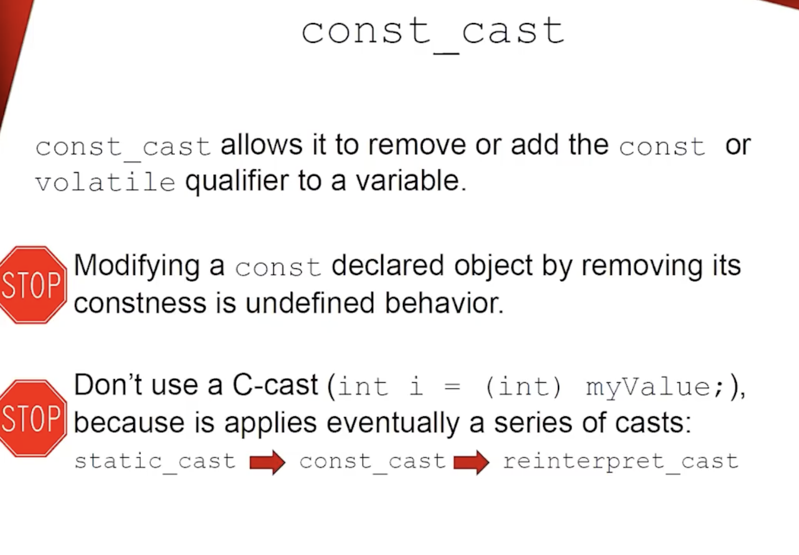
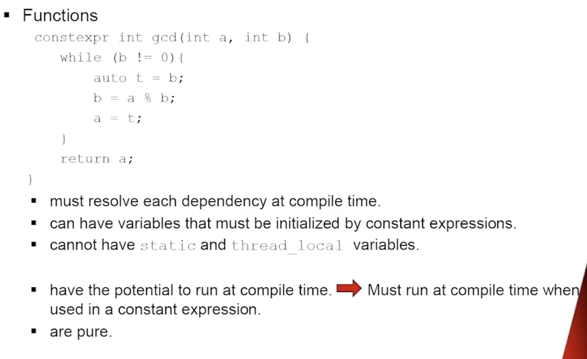
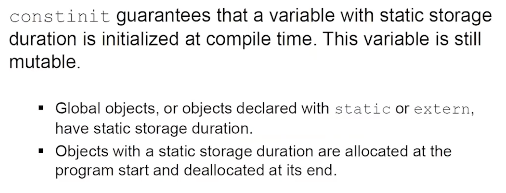
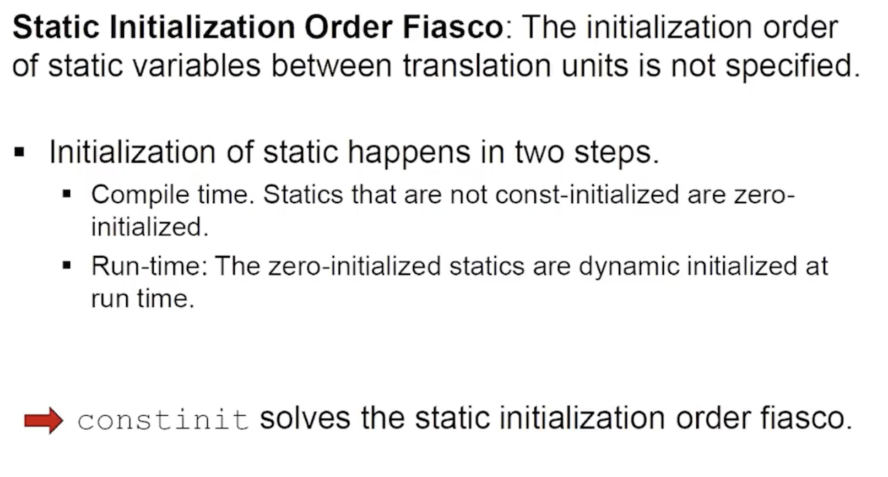
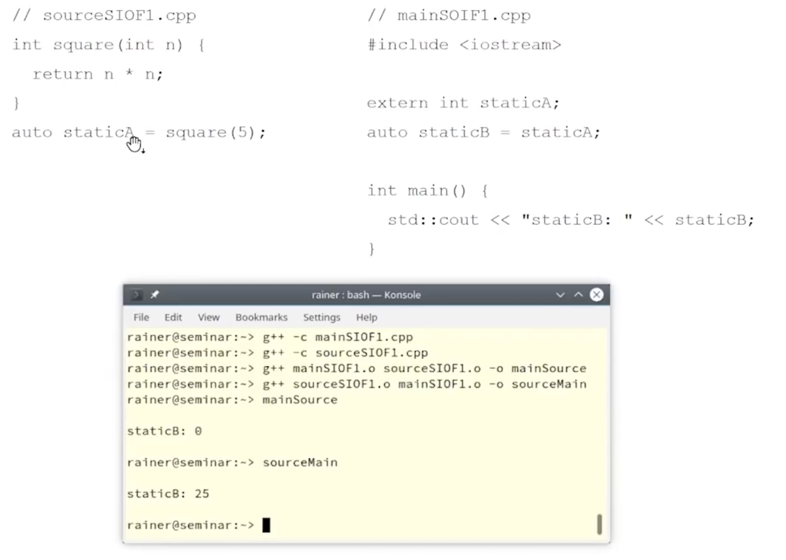
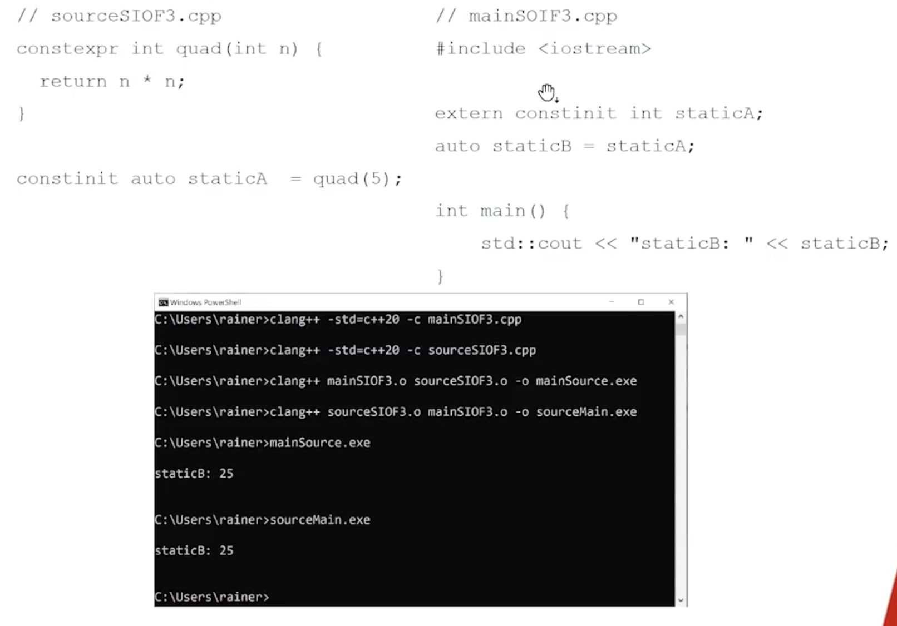

Flavours of Constness in C++
Lectures Referred
- Back to Basics: const and constexpr in C++ - CppCon 2021 (Rest in peace Rainer)
- Your new mental model for constexpr - CppCon 2021 - Notes
- Importance of being const - Cpp 2015 - Notes
--- Notes Start Here --
Const
- Flavours of Constness in C++

const,const_cast-> are part of C++ 98constexpr-> C++11consteval,constinit,is_constant_evaluated-> C++20
-
const:
- In C++, const is a type promise: “through this handle (pointer/reference), you won’t modify the object.”
- const is a quality attribute of our program
- const objects: must be initialized, cannot be modified, cannot be victims of data racs, can only invoke const member functions
- const member functions: cannot modify any member variables (unless mutable), cannot call non-const member functions.

- const only changes the
thispointer, mutable allows the modification (ignores the const onthis) - internally void f() const{} is treated as void f(const ClassName* this){}
- objects are data, member functions are free functions, object is passed as a hidden argument to the member function
3.
#include <iostream> #include <mutex> #include <thread> #include <vector> class ThreadSafeCounter { mutable std::mutex m; // as it's being locked and unlocked in const member function int counter = 0; public: int get() const { std::lock_guard<std::mutex> lk(m); // RAII object, locks & unlocks mutex at construction & destruction return counter; } void inc() { std::lock_guard<std::mutex> lk(m); ++counter; } }; int main() { std::vector<std::jthread> vec; // RAII object, C++20, ThreadSafeCounter counter; for (int i = 0; i < 20; ++i) { vec.emplace_back([&counter] { counter.inc(); std::cout << "counter: " << counter.get() << '\n'; counter.inc(); }); } }
-

- Use const on parameters when the function doesn’t need to modify the caller’s object.
- Don’t use const when the function’s job is to modify the caller’s object (output or in/out).
- “const pointer” vs “pointer to const”:
- Read from right to left.
T* const p-> const pointer to T (pointer cannot be changed)const T* porT const* p-> pointer to const T (value cannot be changed)
const_cast

const int x = 5;
int* p = const_cast<int*>(&x);
*p = 7; // undefined behavior
void f(const int* p) {
int* q = const_cast<int*>(p);
*q = 10; // OK only if caller actually passed pointer to non-const int
}
int a = 1;
f(&a); // OK
const int b = 2;
f(&b); // UB inside f if it writes
const_cast demo (where it's OK vs UB):
#include <iostream>
void safe_mutate_through_const_view(const int *p)
{
// Removing const is allowed; mutating is only defined if *p was originally non-const.
int* q = const_cast<int*>(p);
*q = 42;
}
void ub_mutate_const_object(const int* p) {
int* q = const_cast<int*>(p);
*q = 99; // undefined behavior if *p refers to a truly-const object
}
int main() {
{
int nonConstInt = 10;
const int* pToNonConstInt = &nonConstInt; // const view of a non-const object
safe_mutate_through_const_view(pToNonConstInt);
std::cout << "SAFE nonConstInt: " << nonConstInt << '\n';
}
#ifdef RUN_UB_DEMO
{
const int constInt = 10;
const int* pToConstInt = &constInt;
ub_mutate_const_object(pToConstInt); // UB: may crash, may print 10, may print 99...
std::cout << "UB constInt: " << constInt << '\n';
}
#endif
}
const_cast(calling non-const vs const pointer APIs, and why C-cast is dangerous)void func(int*) {} void funcConst(const int*) {} int main() { // Invoking function taking non-const pointer with const variable const int myInt{1988}; // func(&myInt); // ERROR: cannot convert const int* to int* int* myIntPtr = const_cast<int*>(&myInt); func(myIntPtr); // UB if func modifies *myIntPtr (because myInt is truly const) // Invoking function taking const pointer with (const/non-const) pointer const int* myConstIntPtr = const_cast<const int*>(myIntPtr); funcConst(myConstIntPtr); funcConst(myIntPtr); // const_cast is safer than the C-cast char myChar = 'A'; char* myCharPointer(&myChar); int* intPointer = (int*)(myCharPointer); // compiles, but it's a dangerous cast *intPointer = 'A'; // undefined behavior // int* myIntPointer = static_cast<int*>(myCharPointer); // ERROR (good): static_cast won't do this }- Why the slide says “don’t use C-cast”
A C-style cast (T)x is a “try a bunch of casts until something works” cast. It can silently perform combinations similar to: const_cast (remove const) static_cast (numeric/base conversions) sometimes even reinterpret_cast (bit-level reinterpretation) That makes code harder to audit: you can’t tell which dangerous conversion you just did.
constexpr

- we have two times, compile time and runtime
- 1...constexpr...M...runtime....N
- constexpr is a promise that a function or object can be evaluated at compile time
- constexpr variables are implicitly const (you can't assign to them later)
- const means read-only through this name/type at run time: you can’t modify it via that variable.
- const does not automatically mean “compile-time”. It might be initialized from run-time work.
const int x = someRuntimeFunction(); // OK: x is const, but initialized at runtime
const int a = 5; // often compile-time usable
const int b = rand(); // NOT compile-time (run-time init)
constexpr int y = 5; // always compile-time usable
constexpr int z = rand(); // ERROR: rand() is not a constant expression
- const ⇒ maybe usable as a compile-time constant, but only in certain cases (classic: const int/enum with constant initialization). For non-integral types (like double, std::string), const is not enough to make it compile-time usable; you typically need constexpr and a constexpr-capable type/initializer.

static, static_cast, thread_local (and why not in constexpr)
- What
staticmeans (C++ has multiple meanings):- Static storage duration (lifetime = whole program):
static int g;at namespace/global scope → one variable exists for entire program.static int x;inside a function → still one variable for entire program, but visible only in that function.
- Static member (belongs to the class, not each object):
struct S { static int count; };→ shared by allSobjects.
- Internal linkage (old “file-local” at namespace scope):
static int helper;→ only this translation unit can see it (today: prefer unnamed namespace).
- Static storage duration (lifetime = whole program):
static(local variable): one variable shared across all calls; lifetime = whole program.thread_local: one variable per thread; lifetime = whole thread.static_cast<T>(x): compile-time checked conversion (numbers, related pointer/class conversions). It cannot removeconst.constexprevaluation must be deterministic and cannot depend on hidden mutable state → no localstaticorthread_localinside aconstexprfunction.
Example:
constexpr int bad(int x) {
// static int s = 0; // ERROR in constexpr function (shared state across calls)
// thread_local int t = 0; // ERROR in constexpr function (depends on runtime thread)
return x;
}
int main() {
double d = 3.14;
int i = static_cast<int>(d); // OK: explicit narrowing
}
- Pure functions -> functions that always produce the same output for the same input and have no side effects. Easy to test & refactor. Results can be cached (memoization) for performance.
constexpr int pure_function(int x) { return x * x; } int main() { constexpr int val = pure_function(5); // OK: evaluated at compile time std::cout << pure_function(10) << '\n'; // OK: evaluated at runtime }
constexpr user-defined types (idea)
- If you want objects of your type to exist at compile time, construction must be possible at compile time.
- That means: provide at least one
constexprconstructor and keep it “constant-evaluation friendly”. - Member functions can be
constexpr(usable in constant evaluation) or non-constexpr(runtime-only). - Key nuance: it’s not about the object, it’s about the context.
- In a constant-expression context (
static_assert, template args, array bounds), you can only call operations valid for constant evaluation (typicallyconstexprfunctions). - The same object can still be used at runtime;
constexprdoesn’t forbid runtime calls.
Example:
struct MyDouble { double v; constexpr MyDouble(double x): v(x) {} constexpr double get() const { return v; } void print() const; };
constexpr MyDouble d(3.14);
static_assert(d.get() > 3.0); // compile-time
struct S {
int v;
constexpr S(int x) : v(x) {}
constexpr int get() const { return v; }
void print() const { /* runtime-only (e.g., std::cout) */ }
};
constexpr S s(10);
// OK: compile-time use
static_assert(s.get() == 10);
// Also OK: runtime use (even though s is constexpr)
int main() {
s.print(); // fine at runtime
int x = s.get(); // also fine
}
constexpr + STL containers/algorithms (C++20)
- In C++20, many standard library operations became usable during constant evaluation (implementation support varies).
- Idea: you can build a container, run an algorithm, and return a value — and if used in a constant-expression context, it runs at compile time.
#include <algorithm>
#include <iostream>
#include <vector>
constexpr int maxElement() {
std::vector<int> myVec = {1, 2, 45, 3};
std::sort(myVec.begin(), myVec.end());
return myVec.back();
}
int main() {
constexpr int maxValue = maxElement();
std::cout << "maxValue: " << maxValue << '\n';
constexpr int maxValue2 = [] {
std::vector<int> myVec = {1, 2, 4, 3};
std::sort(myVec.begin(), myVec.end());
return myVec.back();
}();
std::cout << "maxValue2: " << maxValue2 << '\n';
}
consteval (C++20)

consteval= “immediate function”: must be evaluated at compile time. can be evaluated at compile time (when needed)constexpr= “can be evaluated at compile time or runtime”. Must be evaluated at compile time every time it is called- If you try to call it at runtime, you get a compile-time error.
- Use constexpr when you want “compile-time when possible, runtime otherwise.”
- Use consteval when runtime evaluation would be meaningless or dangerous.
constinit (C++20)

constinit= “constant initialization”: variable must be initialized at compile time, but can be modified at runtime.- Use
constinitfor non-const global or static variables that must be initialized at compile time (to avoid static initialization order fiasco). constinitguarantees that the variable is initialized before any dynamic initialization occurs.


- sometimes it works and sometimes it doesn't

is_constant_evaluated (C++20)

std::is_constant_evaluated()function: detects if the current evaluation context is compile-time or runtime.- Use it to write functions that behave differently depending on whether they are evaluated at compile time or runtime.
Function Execution & Variable initialization examples